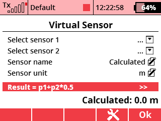
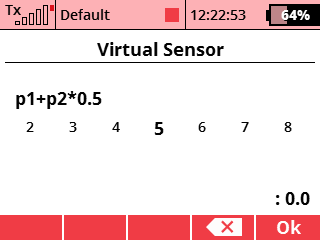

This application allows to display the result of mathematical operations applied on up to two telemetry values.
In the menu, choose Applications - User Applications. Press the F(3) key to open the application browser. Select the "V-sensor" file here.
Open the application configuration. Select one or two sensors of interest and the resulting virtual sensor name/unit.
In the menu, select Timers/Sensors - Displayed Telemetry . Create a new item here and select "Virtual Sensor". The application will have its own desktop widget.

You can download the source code from the official JETImodel Lua-Apps GitHub repository.